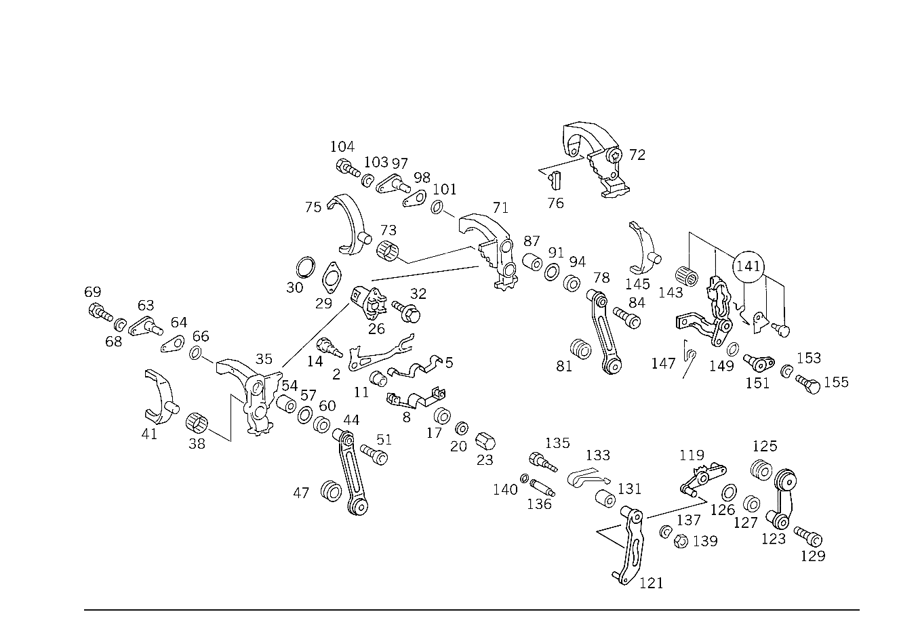

| № | Артикул | Название | Кол. | Примечание |
|---|---|---|---|---|
| 2 | A 124 265 02 08 | - Рычаг | 1 | 5\-АЯ ПЕРЕДАЧА И ПЕРЕДАЧА ЗАДН. ХОДА |
| 5 | A 123 993 01 15 | - ПРУЖИНА | - | |
| 5 | A 124 993 10 15 | - пружина | 1 | БЛОКИР. 1\-ОЙ ПЕРЕДАЧИ ДО 4\-ОЙ ПЕРЕДАЧИ |
| 11 | A 123 265 02 50 | - втулка | 1 | |
| 14 | A 123 265 04 74 | - Палец | 1 | ЛИСТ.РЕССОРА И БЛОКИР.РЫЧАГ НА КАРТЕРЕ КП |
| 17 | A 123 990 24 40 | - Диск | 1 | |
| 20 | N 000125 008418 | - Шайба | - | |
| 20 | N 000125 008443 | - Шайба | 1 | ЛИСТ.РЕССОРА И БЛОКИР.РЫЧАГ НА КАРТЕРЕ КП; 8 MM |
| 23 | N 913016 008000 | - Гайка | - | |
| 23 | N 000917 008007 | - Гайка | 1 | ЛИСТ.РЕССОРА И БЛОКИР.РЫЧАГ НА КАРТЕРЕ КП |
| 26 | A 123 260 05 73 | - БЛОКИРОВКА | 1 | |
| 29 | A 123 265 00 80 | - Уплотнительная прокладка | 1 | TO 123 260 05 73 |
| 30 | A 014 997 11 48 | - Кольцевая прокладка | 1 | TO 202 260 01 73 |
| 32 | N 914005 006000 | - Винт с неспадающей шайбой | - | |
| 32 | N 000933 006183 | - БОЛТ | - | |
| 32 | N 304017 006016 | - Винт с 6-гранной головкой | 2 | БЛОКИР.КЛЕТКА НА КАРТЕРЕ КП; M6X16 |
| 35 | A 126 260 13 30 | - ВИЛКА ПЕРЕКЛЮЧЕНИЯ | 1 | (ВКЛЮЧАЮЩЕЕ КОРОМЫСЛО) 3\-Я И 4\-АЯ ПЕРЕДАЧА |
| 38 | A 007 981 64 10 | - ПОДШИПНИК ИГОЛЬЧАТЫЙ | 1 | |
| 38 | A 008 981 08 10 | - Игольчатый подшипник | 1 | |
| 41 | A 124 265 01 02 | - Вилка перекл.передач | 1 | ТРЕТЬЯ И ЧЕТВЁРТАЯ ПЕРЕДАЧА |
| 41 | A 126 265 02 02 | - Вилка перекл.передач | 1 | ТРЕТЬЯ И ЧЕТВЁРТАЯ ПЕРЕДАЧА |
| 44 | A 201 260 15 39 | - Рычаг перекл.передач | 1 | ТРЕТЬЯ И ЧЕТВЁРТАЯ ПЕРЕДАЧА |
| 47 | A 000 992 10 10 | - втулка | 1 | |
| 51 | N 000912 008063 | - Винт | - | |
| 51 | N 000912 008223 | - Цилиндрич. винт | 1 | РЫЧАГ ВКЛЮЧ.НА ВКЛЮЧ.КОРОМЫСЛЕ |
| 54 | A 123 267 00 53 | - РАСПОРН. ТРУБКА | - | |
| 54 | A 124 267 00 50 | - Втулка с наружной фаской | 1 | РЫЧАГ ВКЛЮЧ.НА ВКЛЮЧ.КОРОМЫСЛЕ |
| 57 | A 011 997 66 48 | - Уплотнительное кольцо | - | |
| 57 | A 026 997 13 48 | - Уплотнительное кольцо | 1 | |
| 60 | A 126 265 01 40 | - Упорная втулка | 1 | |
| 63 | A 124 260 02 27 | - ПОДДЕРЖИВАЮЩИЙ МОСТ | - | |
| 63 | A 124 265 05 74 | - Ось | 1 | ПЕРЕКЛ. КАЧАЮЩ. РЫЧАГ |
| 64 | A 124 265 00 80 | - Уплотнительная прокладка | 1 | |
| 66 | A 007 997 03 48 | - Уплотнительное кольцо | 1 | ОПОРН.ОСЬ НА КАРТЕРЕ КП |
| 68 | N 000137 006204 | - Пружинная шайба | 1 | ОПОРН.ОСЬ НА КАРТЕРЕ КП |
| 69 | N 000933 006183 | - БОЛТ | - | |
| 69 | N 304017 006016 | - Винт с 6-гранной головкой | 1 | ОПОРН.ОСЬ НА КАРТЕРЕ КП; M6X16 |
| 71 | A 126 260 12 30 | - ВИЛКА ПЕРЕКЛЮЧЕНИЯ | 1 | (ВКЛЮЧ.КОРОМЫСЛО) ПЕРВАЯ И ВТОРАЯ ПЕРЕДАЧА |
| 71 | A 210 260 00 30 | - ВИЛКА ПЕРЕКЛЮЧЕНИЯ | 1 | (ВКЛЮЧ.КОРОМЫСЛО) ПЕРВАЯ И ВТОРАЯ ПЕРЕДАЧА |
| 73 | A 007 981 64 10 | - ПОДШИПНИК ИГОЛЬЧАТЫЙ | 1 | |
| 73 | A 008 981 08 10 | - Игольчатый подшипник | 1 | |
| 75 | A 124 265 00 01 | - Вилка перекл.передач | - | ПЕРВАЯ И ВТОРАЯ ПЕРЕДАЧА |
| 75 | A 126 265 07 01 | - Вилка перекл.передач | 1 | ПЕРВАЯ И ВТОРАЯ ПЕРЕДАЧА |
| 75 | A 124 265 00 01 | - Вилка перекл.передач | 1 | (ВКЛЮЧ.КОРОМЫСЛО) ПЕРВАЯ И ВТОРАЯ ПЕРЕДАЧА |
| 78 | A 201 260 14 39 | - Рычаг перекл.передач | - | |
| 78 | A 202 267 01 01 | - РЫЧАГ ПЕРЕКЛЮЧЕНИЯ | 1 | ПЕРВАЯ И ВТОРАЯ ПЕРЕДАЧА |
| 81 | A 000 992 10 10 | - втулка | 1 | |
| 84 | A 124 990 08 12 | - болт | 1 | РЫЧАГ ВКЛЮЧ.НА ВКЛЮЧ.КОРОМЫСЛЕ |
| 87 | A 124 267 00 50 | - Втулка с наружной фаской | 1 | РЫЧАГ ВКЛЮЧ.НА ВКЛЮЧ.КОРОМЫСЛЕ |
| 91 | A 011 997 66 48 | - Уплотнительное кольцо | - | |
| 91 | A 026 997 13 48 | - Уплотнительное кольцо | 1 | |
| 94 | A 126 265 01 40 | - Упорная втулка | 1 | |
| 97 | A 124 260 02 27 | - ПОДДЕРЖИВАЮЩИЙ МОСТ | - | |
| 97 | A 124 265 05 74 | - Ось | 1 | ПЕРЕКЛ. КАЧАЮЩ. РЫЧАГ |
| 98 | A 124 265 00 80 | - Уплотнительная прокладка | 1 | |
| 101 | A 007 997 03 48 | - Уплотнительное кольцо | 1 | ОПОРН.ОСЬ НА КАРТЕРЕ КП |
| 103 | N 000137 006204 | - Пружинная шайба | 1 | ОПОРН.ОСЬ НА КАРТЕРЕ КП |
| 104 | N 000933 006183 | - БОЛТ | - | |
| 104 | N 304017 006016 | - Винт с 6-гранной головкой | 1 | ОПОРН.ОСЬ НА КАРТЕРЕ КП; M6X16 |
| 119 | A 124 260 17 39 | - РЫЧАГ ПЕРЕКЛЮЧЕНИЯ | - | |
| 119 | A 124 260 34 39 | - РЫЧАГ ПЕРЕКЛЮЧЕНИЯ | - | |
| 119 | A 124 260 31 39 | - РЫЧАГ ПЕРЕКЛЮЧЕНИЯ | - | |
| 119 | A 126 260 12 39 | - РЫЧАГ ПЕРЕКЛЮЧЕНИЯ | - | |
| 119 | A 202 260 07 39 | - Рычаг перекл.передач | 1 | 5\-АЯ ПЕРЕДАЧА И ПЕРЕДАЧА ЗАДН. ХОДА |
| 121 | A 126 260 08 39 | - РЫЧАГ ПЕРЕКЛЮЧЕНИЯ | - | |
| 121 | A 126 260 11 39 | - РЫЧАГ ПЕРЕКЛЮЧЕНИЯ | - | |
| 121 | A 126 260 10 39 | - РЫЧАГ ПЕРЕКЛЮЧЕНИЯ | 1 | ПЕРЕДАЧА ЗАДНЕГО ХОДА |
| 123 | A 201 260 16 39 | - Рычаг перекл.передач | 1 | 5\-АЯ ПЕРЕДАЧА И ПЕРЕДАЧА ЗАДН. ХОДА |
| 125 | A 000 992 11 10 | - втулка | 1 | |
| 126 | A 011 997 66 48 | - Уплотнительное кольцо | - | |
| 126 | A 026 997 13 48 | - Уплотнительное кольцо | 1 | |
| 127 | A 126 265 01 40 | - Упорная втулка | 1 | |
| 129 | N 000912 008009 | - Винт | - | M8X20\-8.8 |
| 129 | N 000912 008200 | - Цилиндрич. винт | - | M 8X20\-8.8 |
| 129 | N 000912 008219 | - Цилиндрич. винт | 1 | РЫЧАГ ВКЛЮЧ.ДЛЯ 5\-ОЙ ПЕРЕДАЧИ И ПЕРЕДАЧИ ЗАД.ХОДА НА СИНУС.ВТУЛКЕ M 8X20; M8X20 |
| 131 | A 124 265 04 50 | - втулка | 1 | ФИКСИР.ПЕРЕДАЧИ ЗАД.ХОДА |
| 133 | A 124 993 02 15 | - ПРУЖИНА | - | |
| 133 | A 124 260 00 69 | - пружина | 1 | ФИКСИР.ПЕРЕДАЧИ ЗАД.ХОДА |
| 135 | A 124 265 03 74 | - Палец | 1 | РЫЧАГ ВКЛЮЧ.ДЛЯ 5\-ОЙ ПЕРЕДАЧИ И ПЕРЕДАЧИ ЗАД.ХОДА НА ПРОМЕЖУТ.ПЛАСТИНЕ |
| 135 | A 126 265 02 74 | - БОЛТ | 1 | РЫЧАГ ВКЛЮЧ.ДЛЯ 5\-ОЙ ПЕРЕДАЧИ И ПЕРЕДАЧИ ЗАД.ХОДА НА ПРОМЕЖУТ.ПЛАСТИНЕ |
| 137 | N 000137 008204 | - Пружинная шайба | - | |
| 137 | N 000137 008212 | - Пружинная шайба | 1 | РЫЧАГ ВКЛЮЧ.ДЛЯ 5\-ОЙ ПЕРЕДАЧИ И ПЕРЕДАЧИ ЗАД.ХОДА НА ПРОМЕЖУТ.ПЛАСТИНЕ |
| 139 | N 000936 008011 | - Гайка | 1 | РЫЧАГ ВКЛЮЧ.ДЛЯ 5\-ОЙ ПЕРЕДАЧИ И ПЕРЕДАЧИ ЗАД.ХОДА НА ПРОМЕЖУТ.ПЛАСТИНЕ |
| 141 | A 126 260 17 30 | - ВИЛКА ПЕРЕКЛЮЧЕНИЯ | - | |
| 141 | A 126 260 23 30 | - К-т коромысла перекл. | 1 | ВКЛЮЧ.КОРОМЫСЛО 5\-ОЙ ПЕРЕДАЧИ |
| 143 | A 007 981 64 10 | - ПОДШИПНИК ИГОЛЬЧАТЫЙ | 1 | |
| 143 | A 008 981 08 10 | - Игольчатый подшипник | 1 | |
| 145 | A 124 265 01 02 | - Вилка перекл.передач | 1 | ПЯТАЯ ПЕРЕДАЧА |
| 147 | A 124 993 03 25 | - пружина | 1 | |
| 149 | A 011 997 65 48 | - Уплотнительное кольцо | - | |
| 149 | A 007 997 03 48 | - Уплотнительное кольцо | 2 | |
| 151 | A 124 260 00 27 | - ПОДДЕРЖИВАЮЩИЙ МОСТ | - | |
| 151 | A 124 260 03 27 | - ПОДДЕРЖИВАЮЩИЙ МОСТ | - | |
| 151 | A 124 265 04 74 | - Ось | 2 | ВКЛЮЧ.КОРОМЫСЛО 5\-ОЙ ПЕРЕДАЧИ |
| 153 | N 000137 006204 | - Пружинная шайба | 2 | ОПОР.ОСЬ НА КРЫШКЕ КАРТЕРА КП СЗАДИ |
| 155 | N 000933 006183 | - БОЛТ | - | |
| 155 | N 304017 006016 | - Винт с 6-гранной головкой | 2 | ОПОР.ОСЬ НА КРЫШКЕ КАРТЕРА КП СЗАДИ; M6X16 |
Позиций: 97 · подписано на схемах: 97 · колесо — плавный зум в курсор, перетаскивание — пан, двойной клик — зум, клик по артикулу — скопировать.